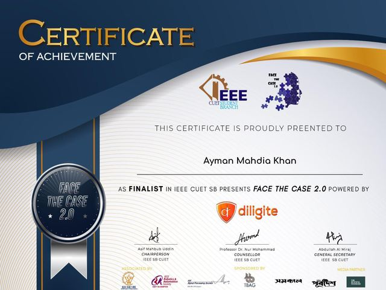

Top 20 Global Finalist
ACI Spring 2022 Concrete Solutions Competition
American Concrete Institute · 11th overall, 2nd from South Asia · flood-resistant modular house in AAC and rice husk ashMar 2022
Community engagement & science communication
